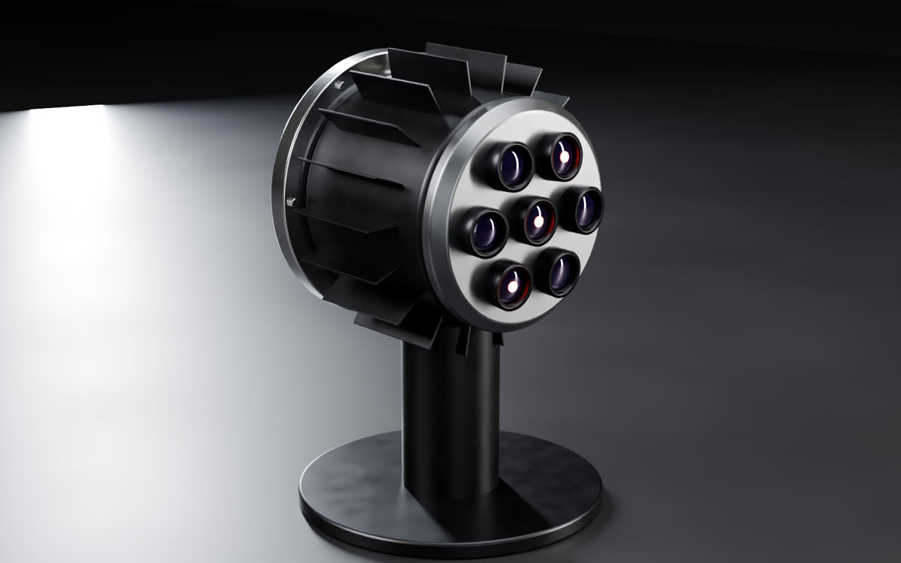
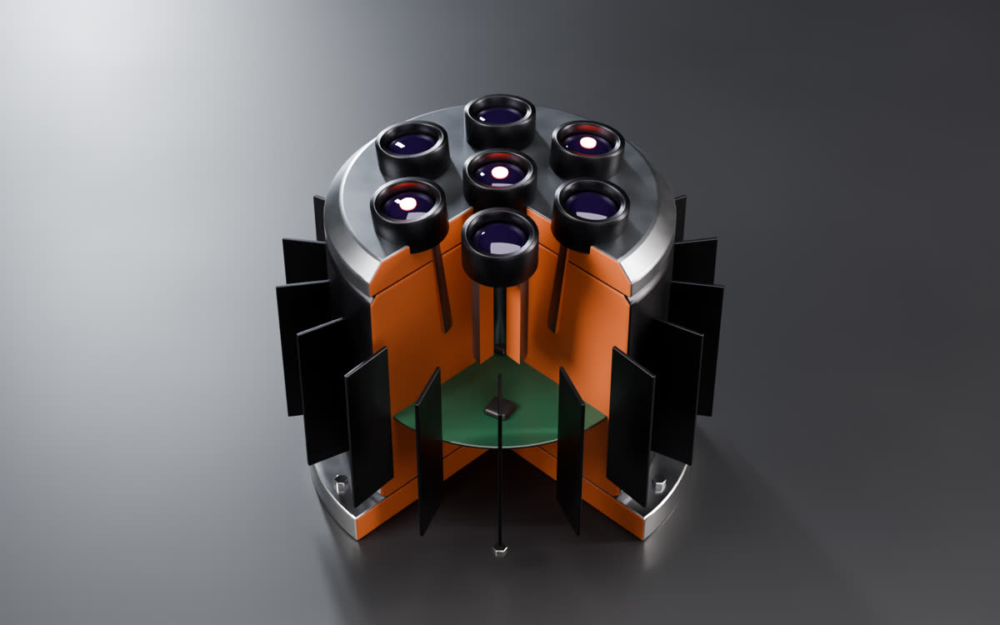
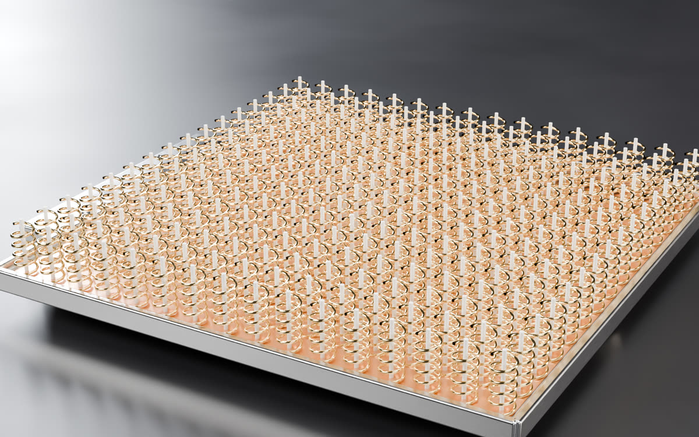
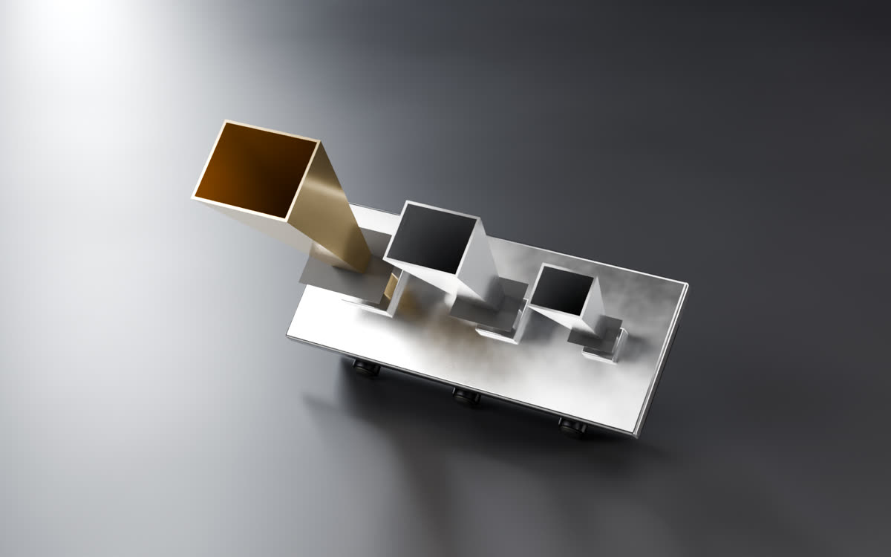
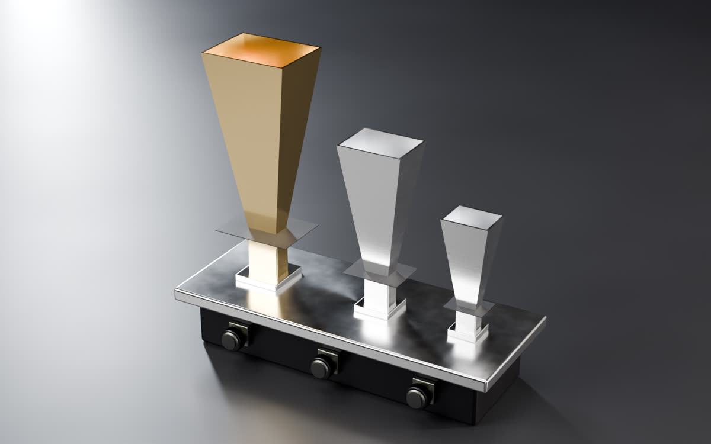
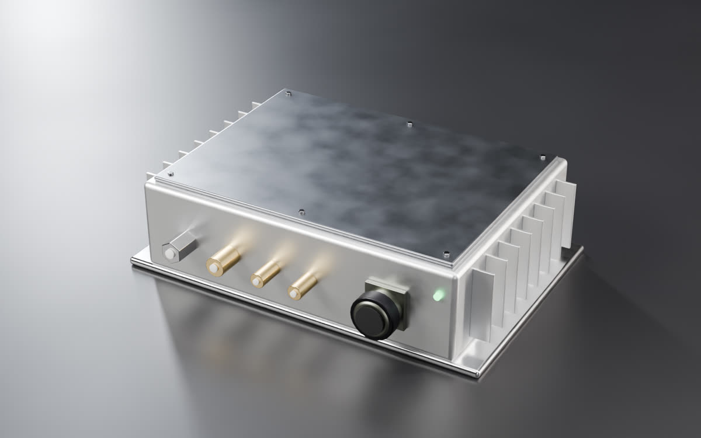
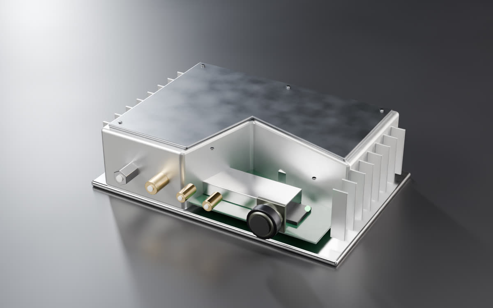

Caelum · communications In design
Links where a gimbal
gets in the way.
Caelum is our family of communications parts: a radio, a laser head with no moving parts, a beacon and a deployable antenna. Built for the links between a tug and its customer, across a formation and inside a cluster.
The parts
Sold as a set, or one at a time to any satellite maker.


Caelum laser head
A laser terminal with no gimbal. Seven emitter clusters on a domed face each look a few degrees apart, and the beam is steered by switching clusters, not by moving a telescope.
Each cluster: 2.5 cm aperture, 7 × 4 mW emitters


Caelum helix array
A flat antenna panel that folds against the spacecraft for launch and springs open in orbit.
256 small helix elements, 16 × 16, about 2 g each


Caelum beacon
Three horns send steady tones on K, Q and E band, so ground stations can measure how high-band signals pass through weather.
Three bands, one plate


Caelum multi-band radio
One radio box that covers several bands, with fins that carry its heat into the spacecraft’s structure.
S, X and Ka band ports
Concept renders of our designs. Figures are design targets from Easley, not yet measured on hardware.
Built for awkward links
Radios, laser heads and antennas, sold as parts. Built for the links a gimbal makes awkward: between a tug and its customer, across a formation, and inside a cluster.

Flying on Unwana
Caelum’s laser head and deployable helix sit on top of Unwana, our showcase spacecraft, so customers can watch them link in orbit.
Concept render. Caelum parts are in design.